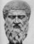

Para os gregos da antiguidade, o movimento estava directamente associado ao pensamento. Só com o movimento é que as ideias podiam fluir. Na cena da apresentação de Protágoras (315 a-b) os seus discípulos acompanham o seu discurso enquanto este anda em círculo e têm o cuidado de irem sempre atrás do mestre. Curiosamente, ao sentaram-se, contradizem esta ideia movimento/pensamento. Talvez por isso, Platão tenha escolhido Cálias para ser ele a sugerir que se sentem todos e que se disponham em forma de assembleia (317 d).
De qualquer forma, a verdade é que
Platão compreendeu que
a melhor forma de se conduzir uma discussão seria com os
intervenientes sentados. Mais tarde, em 388/7 a. C., quando
abriu a
Academia, a organização das salas também reflectiu
esta ideia, já que
as aulas eram dadas com o mestre e os discípulos sentados.
